Jetzt neu in BW: Palantir
vonStefan Leibfarth
in der
Stadtbibliothek Stuttgart
Was ist Gotham?
Was ist Gotham?
 Quelle: Magazin DEUTSCHE POLIZEI der GdP
Quelle: Magazin DEUTSCHE POLIZEI der GdP
Was ist Gotham?

Quelle: Magazin DEUTSCHE POLIZEI der GdP
Was ist Gotham?

Quelle: Magazin DEUTSCHE POLIZEI der GdP
Was ist Gotham?

Quelle: Magazin DEUTSCHE POLIZEI der GdP
Was ist Gotham?
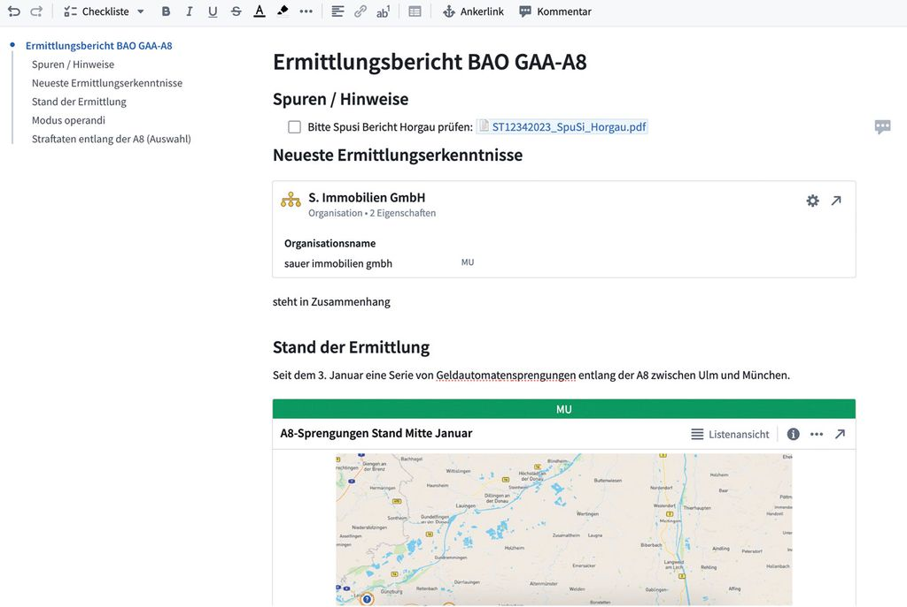
Quelle: Magazin DEUTSCHE POLIZEI der GdP
Personen hinter Palantir
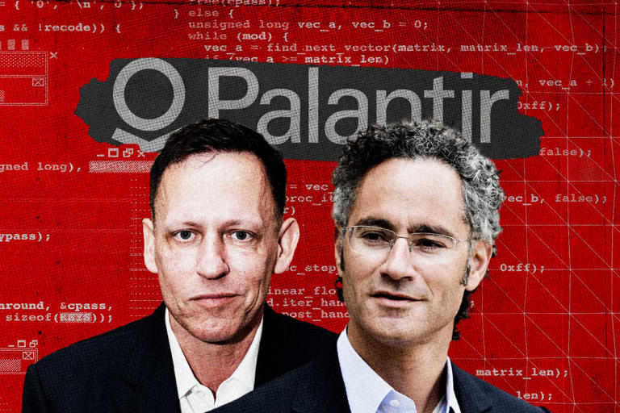
© Getty Images/Nordin Catic; Anadolu; Collage: Dominik Schmitt/Gründerszene
Einführung in BW
05/2021 Koalitionmsvertrag Grün-Schwarz "Für die Auswertung großer Datenmengen braucht es geeignete Soft- und Hardware sowie eine gute Anbindung."Einführung in BW
09/2024 Kabinett beschließt Sicherheitspaket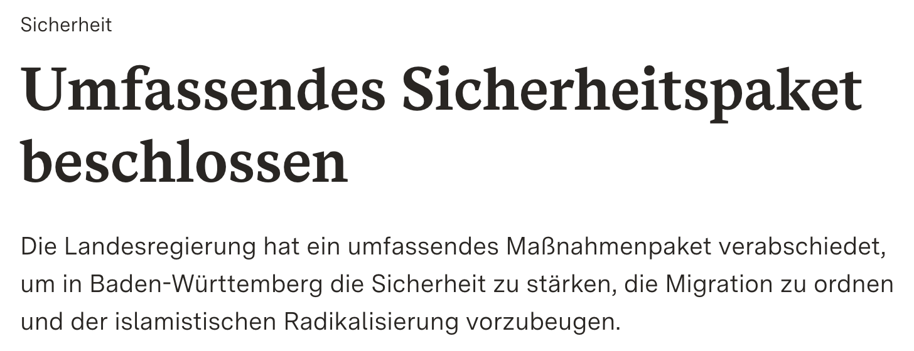
Einführung in BW
09/2024 Kabinett beschließt Sicherheitspaket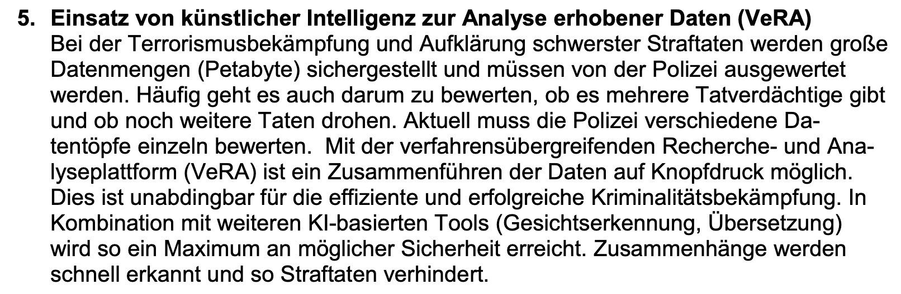
Einführung in BW
03/2025 Vertragsschluss BW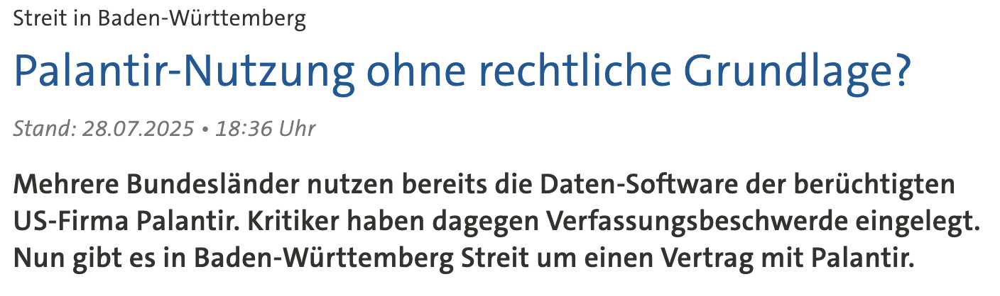
Unterzeichnung des Liefer- und Servicevertrags durch das Präsidium Technik, Logistik, Service der Polizei (PTLS Pol) auf Basis des bayerischen Rahmenvertrags mit Palantir.Quelle: tagesschau.de
Einführung in BW
07/2025 Kabinettsbeschluss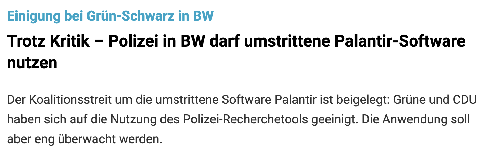
Einigung der Landesregierung (Grün-Schwarz) auf den Gesetzentwurf zur Änderung des Polizeigesetzes (PolG).
Quelle: SWP
Einführung in BW
11/2025 Verabschiedung im Landtag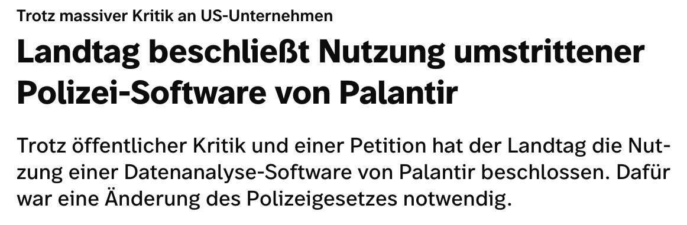
§47a PolG BW
Einführung in BW
Q2/2026 Geplanter Start der Plattform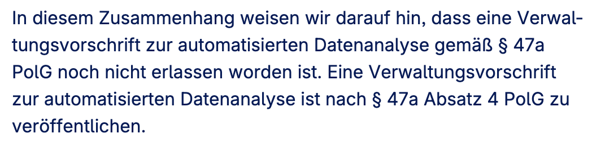
Quelle: IM BW auf FragDenStaat.de, Stand: 10.03.2026
Nutzungs-"Begrenzung"
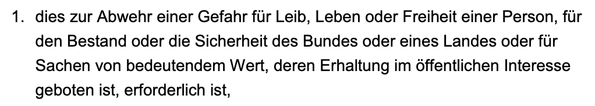
Nutzungs-"Begrenzung"
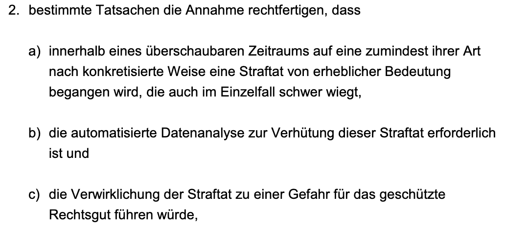
Nutzungs-"Begrenzung"
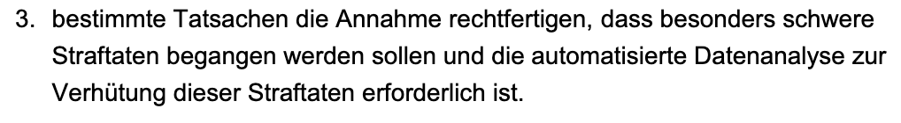
Datenquellen
"eigene Vorgangsdaten, Falldaten, Daten aus polizeilichen Auskunftssystemen und Daten aus dem polizeilichen Informationsaustausch zusammengeführt werden. Verkehrsdaten, Daten aus Asservaten, Daten im Sinne des Satzes 1 aus gezielten Abfragen in landesfremden Datenbeständen, Daten in gesondert geführten staatlichen Registern"Datenquellen
"Verkehrsdaten aus Funkzellenabfragen sowie Telekommunikationsdaten dürfen bei einer Maßnahme nach Absatz 1 Nummer 3 nicht in die Analyse einbezogen werden."Schutz unbeteiligter Personen
"Zum Schutz unbeteiligter Personen werden deren personenbezogene Vorgangsdaten in eine automatisierte Datenanalyse nicht einbezogen. [...] Durch technisch-organisatorische Vorkehrungen muss sichergestellt werden, dass diese Regelungen praktisch wirksam werden."Internet-Anbindung
"Eine direkte Anbindung der Analyseplattform an Internetdienste ist unzulässig."aber
"... einzelne gesondert gespeicherte Daten aus Internetquellen können ergänzend einbezogen werden, soweit dies im Einzelfall erforderlich ist"
--> DeFacto Freibrief
Nutzung von "KI"
Nicht direkt untersagt, laut damaligem IM Strobl "keine Nutzung von KI"Gesetz: "Dabei ist sicherzustellen, dass diskriminierende Algorithmen weder herausgebildet noch verwendet werden."
--> Mit "KI" nicht sicherstellbar!
Kontrolle
"Zu diesem Zweck unterrichtet das Innenministerium das Parlamentarische Kontrollgremium mindestens vierteljährlich. Auf Verlangen des Parlamentarischen Kontrollgremiums hat das Innenministerium zu einer konkreten Maßnahme zu berichten.""Das Innenministerium unterrichtet die Öffentlichkeit [...] jährlich über die [...] Maßnahmen."
Realität in Hessen
Nicht nur Abwehr schwerer Gefahren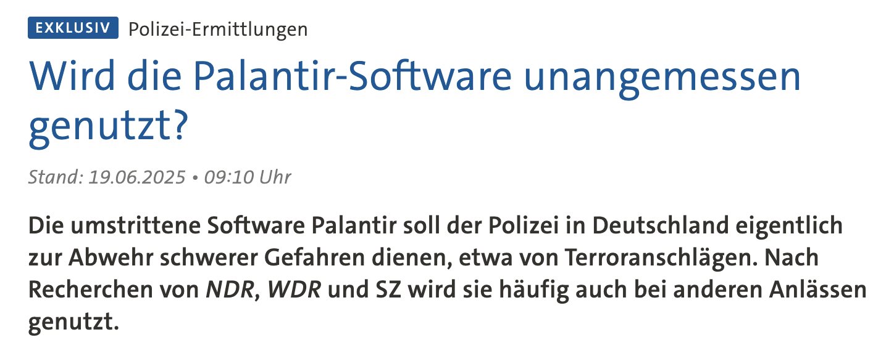
"In Hessen wird die Software von Palantir, die dort "Hessendata" heißt, bis zu 15.000 Mal im Jahr genutzt und ist inzwischen ein Kernstück der Ermittlungsarbeit, wie die Polizei bestätigt."
Quelle: tagesschau.de
Widerstand
kein-palantir-bw.org
Widerstand
Petition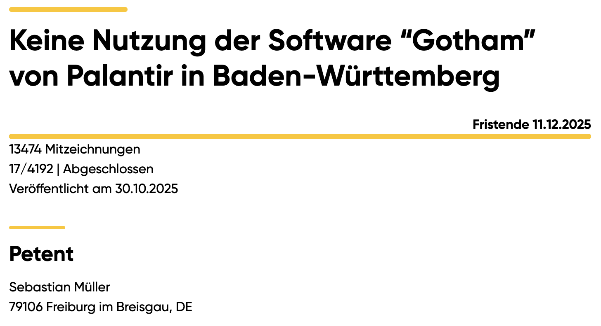
Widerstand
PetitionWiderstand
Anhörung im PetitionsausschussAusblick
Rettet uns das BVerfG?In BW: Eher nicht
Bei KI zur Datenanalyse: Hoffentlich
Ausblick
Neuer Qualitionsvertrag:Sicherheitsbehörden zeitgemäß ausstatten
"pätestens bis zum Jahr 2030 eine europäische Alternative zu Palantir"
"Einsatz Künstlicher Intelligenz zur Auswertung digitaler Beweismittel intensivieren "
"Intelligente Videoüberwachung: KI-Videoschutz"
"Automatisierter Bildabgleich im Internet"
Mehr "Präventivgewahrsam"